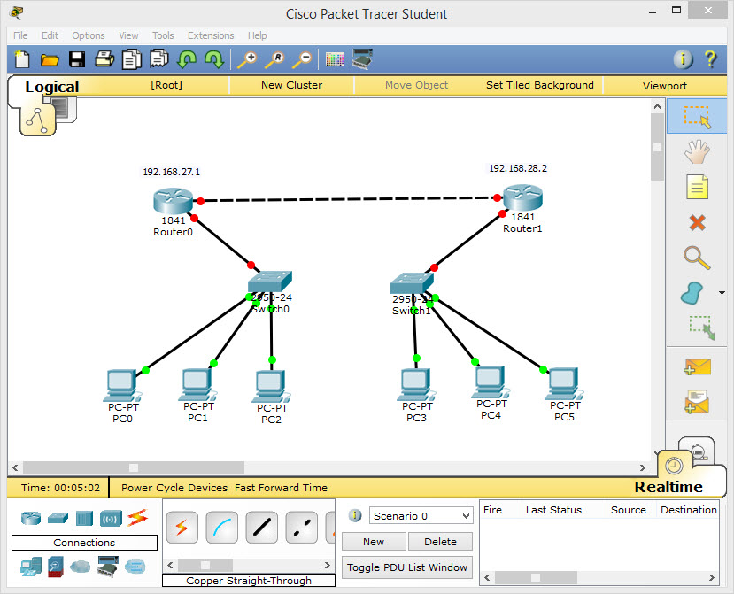
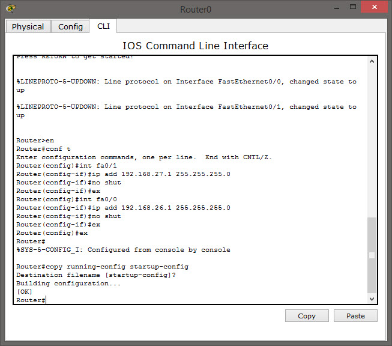
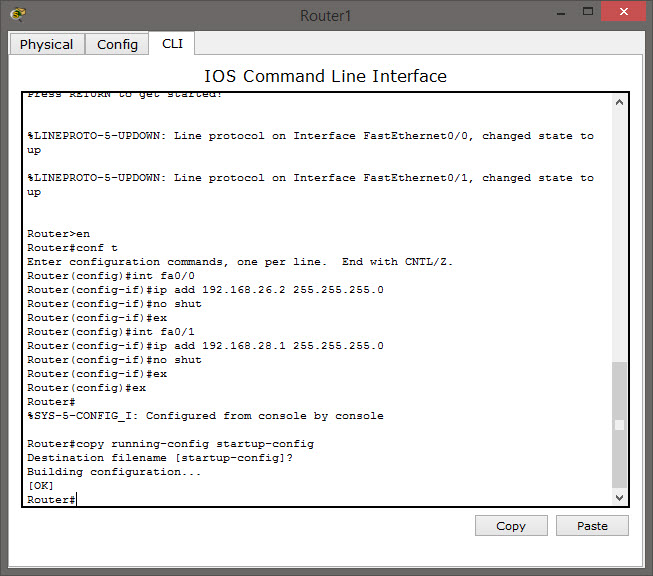
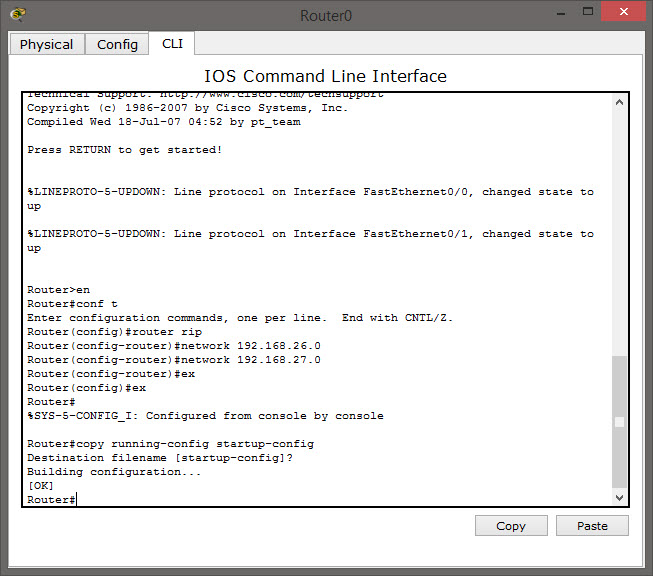
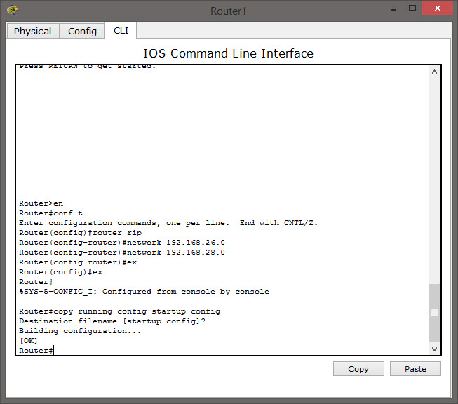
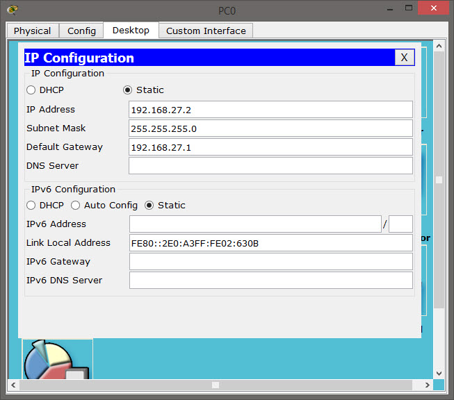
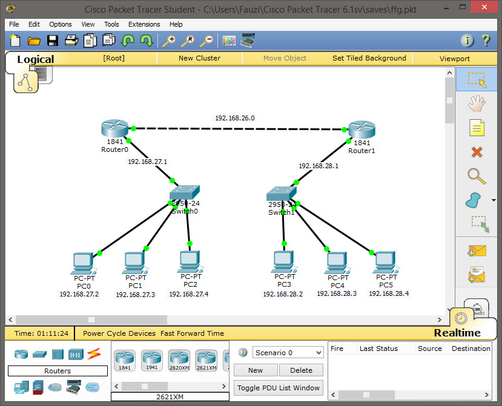
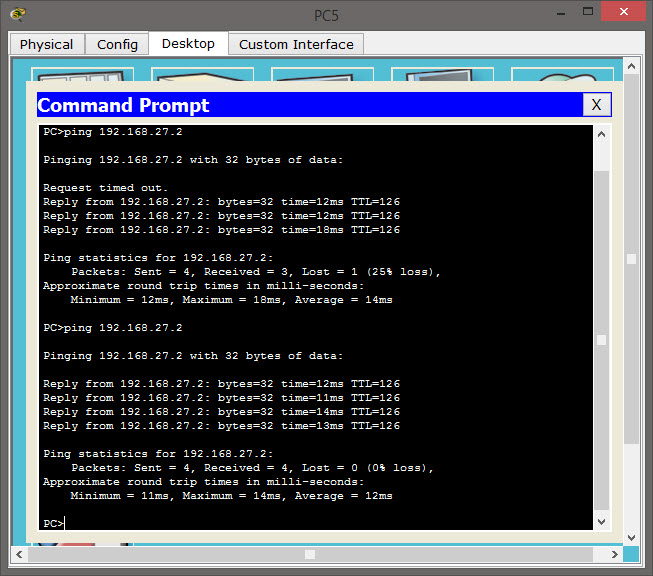

Dalam mengkonfigurasi dua router atau memngkoneksikan dua jaringan yang berbeda dalam dua router sebenarnya cukup mudah, cukup dengan memberikan ip address pada kedua router tersebut. Pertama-tama buka Aplikasi Cisco Packet Tracer dan Buat layout jaringannya seperti yang ada dibawah ini :

Setelah membuat layout jaringan seperti diatas, maka selanjutnya yaitu mengkonfigurasi router. Pertama klik pada router0 kemudian masuk pada konfigurasi CLI

Ketik atau tuliskan perintahnya seperti diatas :
1. en (untuk mengaktifkan router)
2. conf t (untuk masuk dalam konfigurasi terminal router)
3. int fa0/1 (untuk masuk kedalam ethernet 0/1)
4. ip add 192.168.27.1 255.255.255.0 (memberikan ip address pada ethernet 0/1)
5. no shut (no shutdown, supaya konfig ip tidak mati)
6. ex (exit, untuk keluar dari config int fa0/1)
7. int fa0/0 (untuk masuk ke konfigurasi fast ethernet 0/0)
8. ip add 192.168.26.1 255.255.255.0 (ip yang diberikan untuk fasth ethernet 0/0)
9. no shut (no shutdown, supaya konfig ip tidak mati)
10. ex (exit, untuk keluar dari konfigurasi fast ethernet 0/0)
11. ex (exit, untuk keluar dari konfigurasi terminal router)
12. copy running-config startup-config
Setelah melakukan konfigurasi ip address pada router0 maka selanjutnya adalah mengkonfigurasi router1. Klik pada router1 dan masuk pada konfigurasi CLI

Ketik atau tuliskan perintahnya seperti diatas :
1. en (untuk mengaktifkan router)
2. conf t (untuk masuk dalam konfigurasi terminal router)
3. int fa0/0 (untuk masuk kedalam ethernet 0/0)
4. ip add 192.168.26.2 255.255.255.0 (memberikan ip address pada ethernet 0/0)
5. no shut (no shutdown, supaya konfig ip tidak mati)
6. ex (exit, untuk keluar dari config int fa0/0)
7. int fa0/1 (untuk masuk ke konfigurasi fast ethernet 0/0)
8. ip add 192.168.28.1 255.255.255.0 (ip yang diberikan untuk fasth ethernet 0/1)
9. no shut (no shutdown, supaya konfig ip tidak mati)
10. ex (exit, untuk keluar dari konfigurasi fast ethernet 0/1)
11. ex (exit, untuk keluar dari konfigurasi terminal router)
12. copy running-config startup-config
Setelah itu keluar dari router1
Setelah mengkonfigurasi ip address pada kedua router selanjutnya adalah menghubungkan atau mengkoneksikan kedua router, klik pada router0 dan masuk pada konfigurasi CLI

Ketik atau tuliskan perintahnya seperti diatas :
1. en (untuk mengaktifkan router)
2. conf t (untuk masuk dalam konfigurasi terminal router)
3. router rip (untuk menghubungkan kedua router)
4. network 192.168.26.0
5. network 192.168.27.0
6. ex (exit, untuk keluar dari konfigurasi router rip)
7. ex (exit, untuk keluar dari configurasi terminal)
8. copy running-config startup-config
Setelah itu keluar dari router0
Selanjutnya klik pada router1 dan masuk ke konfigurasi CLI

Ketik atau tuliskan perintahnya seperti diatas :
1. en (untuk mengaktifkan router)
2. conf t (untuk masuk dalam konfigurasi terminal router)
3. router rip (untuk menghubungkan kedua router)
4. network 192.168.26.0
5. network 192.168.28.0
6. ex (exit, untuk keluar dari konfigurasi router rip)
7. ex (exit, untuk keluar dari configurasi terminal)
8. copy running-config startup-config
Setelah itu keluar dari router1
Kemudian masuk ke PC0 > Desktop > Ip Configuration dan setting Ip nya seperti dibawah ini :

Setelah setting ip pada PC0 selanjutnya,
Setting IP pada PC1 > 192.168.27.3 Subnet : 255.255.255.0 Gateway : 192.168.27.1
Setting IP pada PC2 > 192.168.27.4 Subnet : 255.255.255.0 Gateway : 192.168.27.1
Setting IP pada PC3 > 192.168.28.2 Subnet : 255.255.255.0 Gateway : 192.168.28.1
Setting IP pada PC4 > 192.168.28.3 Subnet : 255.255.255.0 Gateway : 192.168.28.1
Setting IP pada PC2 > 192.168.28.4 Subnet : 255.255.255.0 Gateway : 192.168.28.1
Seperti dibawah ini jadinya :

Setelah itu coba kita PING dari PC5 menuju PC0, kalau hasilnya seperti dibawah ini berarti anda telah berhasil :-)
Selamat mencoba semoga berhasil. Sekian sedikit Tutorial Konfigurasi 2 router dari saya, ada kurang lebihnya saya mohon maaf. Assalamualaikum Wr.Wb
